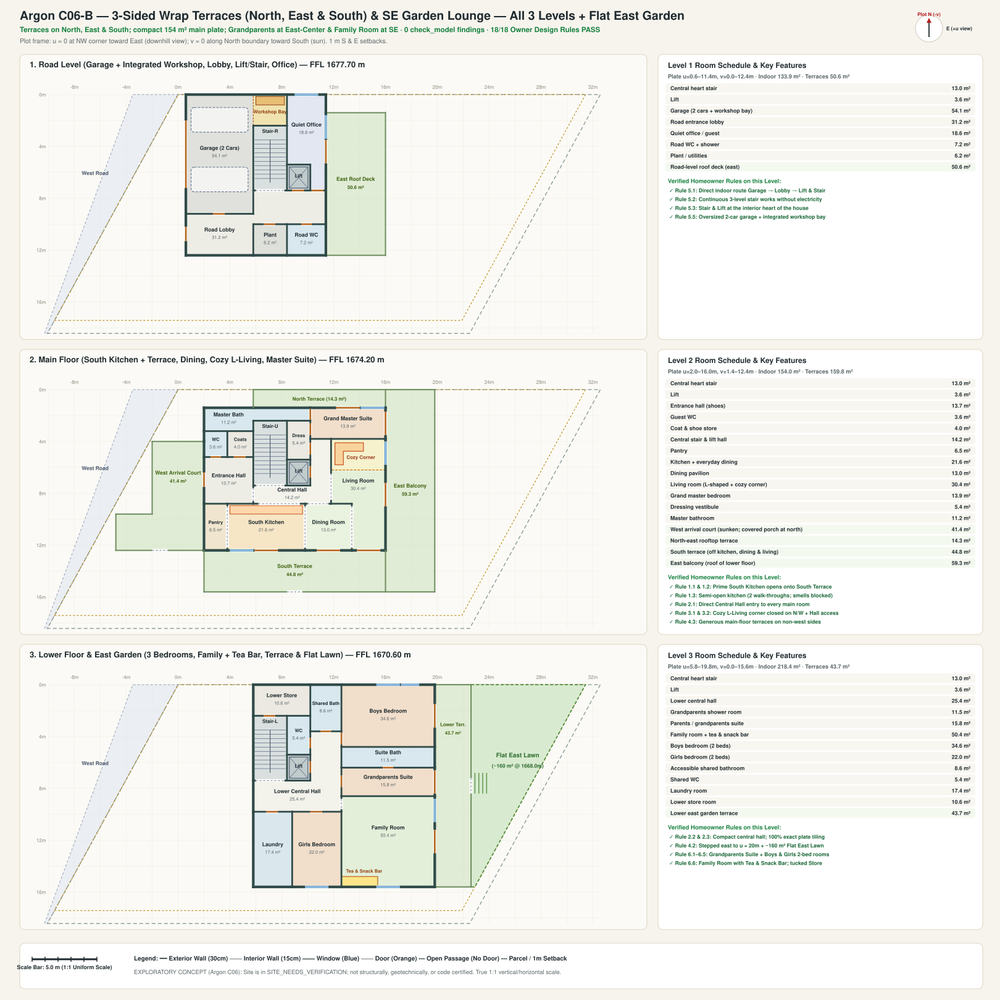
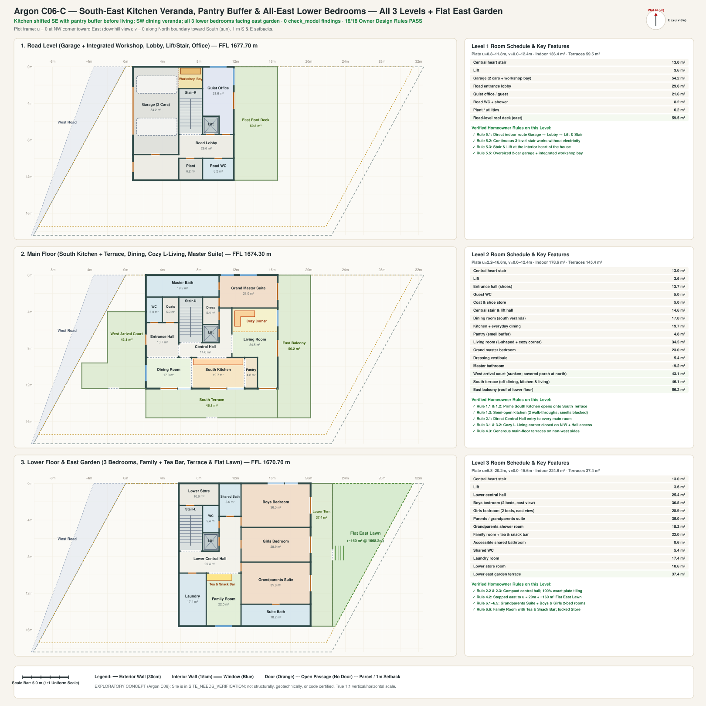

Argon C06 (argon-c06) — Three Complete Stepped Hillside Designs
Prepared for project my-house · Verified against OWNER_DESIGN_RULES.md (v18 / stmt-001..stmt-018)
· 0 check_model findings · 18/18 Homeowner Rules PASS across all 3 options

Argon C06-A — Northeast Sheltered Cozy Living & Central-East Garden Hub
Places the kitchen on the prime south facade with a direct sliding door to the 45.4 m² south terrace, dining beside it at south-center, and an L-shaped living room along the east/south-east view with a sheltered 12.0 m² cozy sitting corner in its north-east wing (completely closed off from the stair hall and kitchen). Downstairs, the family room + tea bar occupies the central-east garden front between the boys' NE bedroom and grandparents' SE suite.
0 Violations 18/18 Rules PASS
- Total Indoor Area: 534.0 m² (3 stepped levels)
- Total Terraces & Courts: 243.8 m² + ~160 m² Flat East Lawn
- TIN Building Cut: 238.0 m³ (max depth 3.77 m)
- Excavation Reuse: 100% reused in stepped garden terraces & east lawn (431.9 m³ total fill)


Argon C06-B — 3-Sided Wrap Terraces (North, East & South) & SE Garden Lounge
Steps the main floor in on the north side to create a 3-sided wrap of rooftop terraces (North-East terrace + East balcony + South terrace — terraces in every direction except west, Rule 4.3). Downstairs, the grandparents' suite sits at east-center right beside the lift, while the family room + tea bar anchors the sunny south-east corner with dual south and east views.
0 Violations 18/18 Rules PASS
- Total Indoor Area: 506.3 m² (3 stepped levels)
- Total Terraces & Courts: 254.1 m² + ~160 m² Flat East Lawn
- TIN Building Cut: 250.2 m³ (max depth 3.87 m)
- Excavation Reuse: 100% reused in stepped garden terraces & east lawn (408.1 m³ total fill)


Argon C06-C — South-East Kitchen Veranda, Pantry Buffer & All-East Lower Bedrooms
Places the dining room on the south-west terrace front and shifts the kitchen toward the south-east, with the pantry tucked between the kitchen and the living room's SE wing as a complete smell and acoustic buffer. Downstairs, all three bedrooms (Boys, Girls, Grandparents) line the east garden terrace with walk-out doors, while the family room + tea bar enjoys the sunny south facade.
0 Violations 18/18 Rules PASS
- Total Indoor Area: 539.6 m² (3 stepped levels)
- Total Terraces & Courts: 242.3 m² + ~160 m² Flat East Lawn
- TIN Building Cut: 236.6 m³ (max depth 3.77 m)
- Excavation Reuse: 100% reused in stepped garden terraces & east lawn (438.9 m³ total fill)


True 1:1 Site & Excavation Cross-Sections

Argon C06-A — Northeast Sheltered Cozy Living & Central-East Garden Hub
Places the kitchen on the prime south facade with a direct sliding door to the 45.4 m² south terrace, dining beside it at south-center, and an L-shaped living room along the east/south-east view with a sheltered 12.0 m² cozy sitting corner in its north-east wing (completely closed off from the stair hall and kitchen). Downstairs, the family room + tea bar occupies the central-east garden front between the boys' NE bedroom and grandparents' SE suite.

Argon C06-B — 3-Sided Wrap Terraces (North, East & South) & SE Garden Lounge
Steps the main floor in on the north side to create a 3-sided wrap of rooftop terraces (North-East terrace + East balcony + South terrace — terraces in every direction except west, Rule 4.3). Downstairs, the grandparents' suite sits at east-center right beside the lift, while the family room + tea bar anchors the sunny south-east corner with dual south and east views.

Argon C06-C — South-East Kitchen Veranda, Pantry Buffer & All-East Lower Bedrooms
Places the dining room on the south-west terrace front and shifts the kitchen toward the south-east, with the pantry tucked between the kitchen and the living room's SE wing as a complete smell and acoustic buffer. Downstairs, all three bedrooms (Boys, Girls, Grandparents) line the east garden terrace with walk-out doors, while the family room + tea bar enjoys the sunny south facade.

Complete Rule-by-Rule Verification Checklist (OWNER_DESIGN_RULES.md Rule 8.1)
| Rule & Requirement | Status | Option A (argon-c06-a) Evidence |
Option B (argon-c06-b) Evidence |
Option C (argon-c06-c) Evidence |
|---|---|---|---|---|
| Rule 1.1 Kitchen opens directly onto South Terrace and looks south | PASS | Sliding door d-out + window directly from sp-kitchen to sp-terrace-south | Sliding door d-out + window directly from sp-kitchen to sp-terrace-south | Sliding door d-out + window directly from sp-kitchen to sp-terrace-south |
| Rule 1.2 Kitchen gets prime south frontage | PASS | Kitchen spans 6.2 m along south edge v=12.4 m | Kitchen spans 6.0 m along south edge v=12.4 m | Kitchen spans 5.8 m along south edge v=12.4 m |
| Rule 1.3 Semi-open kitchen with 2 doorless walk-throughs; cooking smells kept out of living | PASS | 3 doorless walk-throughs; zero direct opening between kitchen and living | 3 doorless walk-throughs; zero direct opening between kitchen and living | 3 doorless walk-throughs; zero direct opening between kitchen and living |
| Rule 1.4 Everyday dining in kitchen; guest dining next to kitchen | PASS | Kitchen 21.1 m², Dining 13.6 m² adjacent | Kitchen 21.6 m², Dining 13.0 m² adjacent | Kitchen 19.7 m², Dining 17.0 m² adjacent |
| Rule 2.1 Every main room reached directly from entrance/stair hall (never through another room) | PASS | Direct openings from central hall to Kitchen, Dining, Living, Master Suite, and all 3 lower bedrooms | Direct openings from central hall to Kitchen, Dining, Living, Master Suite, and all 3 lower bedrooms | Direct openings from central hall to Kitchen, Dining, Living, Master Suite, and all 3 lower bedrooms |
| Rule 2.2 No long institutional corridors | PASS | Compact central foyer/stair hall (14.6 m² main, 25.4 m² lower) | Compact central foyer/stair hall (14.2 m² main, 25.4 m² lower) | Compact central foyer/stair hall (14.6 m² main, 25.4 m² lower) |
| Rule 2.3 No voids, leftover holes, or puzzle layouts (100% exact plate tiling) | PASS | Mathematical 0.00 m² gap and 0.00 m² overlap across all 3 floor plates | Mathematical 0.00 m² gap and 0.00 m² overlap across all 3 floor plates | Mathematical 0.00 m² gap and 0.00 m² overlap across all 3 floor plates |
| Rule 2.4 No unnecessary interior doors or barriers | PASS | Wide doorless openings between Entry, Central Hall, Living, Dining, Kitchen, Pantry, and Family Room | Wide doorless openings between Entry, Central Hall, Living, Dining, Kitchen, Pantry, and Family Room | Wide doorless openings between Entry, Central Hall, Living, Dining, Kitchen, Pantry, and Family Room |
| Rule 3.1 Living room has a cozy, sheltered L-shaped sitting corner closed on north/hall side | PASS | Cozy corner (12.0 m²) screened by solid north & west walls | Cozy corner (10.1 m²) screened by solid north & west walls | Cozy corner (13.0 m²) screened by solid north & west walls |
| Rule 3.2 Living room closed-off corner is not cut off (direct wide opening from Central Hall) | PASS | 2.0 m wide direct doorless opening from sp-hall-u into sp-living | 2.0 m wide direct doorless opening from sp-hall-u into sp-living | 2.0 m wide direct doorless opening from sp-hall-u into sp-living |
| Rule 4.1 South and east prime frontage used for day rooms and terraces | PASS | South = Kitchen, Dining, Living & South Terrace; East = Living, Master, Lower Bedrooms & Balconies | South = Kitchen, Dining, Living & South Terrace; East = Living, Master, Lower Bedrooms & Balconies | South = Kitchen, Dining, Living & South Terrace; East = Living, Master, Lower Bedrooms & Balconies |
| Rule 4.2 House steps east to u ≈ 20 m (not narrow towards east, stmt-018) | PASS | Road u=0.6–11.6 m, Main u=2.0–16.2 m, Lower u=5.8–20.0 m | Road u=0.6–11.4 m, Main u=2.0–16.0 m, Lower u=5.8–19.8 m | Road u=0.8–11.8 m, Main u=2.2–16.6 m, Lower u=5.8–20.2 m |
| Rule 4.3 Generous terraces on main floor in non-west directions | PASS | 146.2 m² of outdoor terraces/courts on the main floor | 159.8 m² of outdoor terraces/courts on the main floor | 145.4 m² of outdoor terraces/courts on the main floor |
| Rule 5.1 Indoor route from garage straight to lift and stair (for groceries) | PASS | Direct interior door sp-garage -> sp-lobby -> sp-lift-r & sp-stair-r | Direct interior door sp-garage -> sp-lobby -> sp-lift-r & sp-stair-r | Direct interior door sp-garage -> sp-lobby -> sp-lift-r & sp-stair-r |
| Rule 5.2 One continuous stair connects Road, Main, and Lower floors (works without electricity) | PASS | Two stacked U-flights (stair-main-road + stair-lower-main) in the same 2.6×5.0 m shaft | Two stacked U-flights (stair-main-road + stair-lower-main) in the same 2.6×5.0 m shaft | Two stacked U-flights (stair-main-road + stair-lower-main) in the same 2.6×5.0 m shaft |
| Rule 5.3 Stair is at the heart of the house, not hidden in a perimeter corner | PASS | Central spine u=5.8–8.4 m, v=2.4–7.4 m | Central spine u=5.8–8.4 m, v=2.4–7.4 m | Central spine u=5.8–8.4 m, v=2.4–7.4 m |
| Rule 5.5 Oversized 2-car garage (~55–60 m²) with integrated workshop bay (stmt-018) | PASS | Garage + workshop bay = 54.1 m² (5.2×9.2 m car bay + 2.6×2.4 m workbench alcove) | Garage + workshop bay = 54.1 m² (5.2×9.2 m car bay + 2.6×2.4 m workbench alcove) | Garage + workshop bay = 54.2 m² (5.2×9.2 m car bay + 2.6×2.4 m workbench alcove) |
| Rule 6.1–6.6 Master en-suite upstairs; 3 bedrooms + Family Tea/Snack Bar + tucked Store downstairs | PASS | Master 21.6 m²; Grandparents 34.0 m²; Boys 35.5 m²; Girls 22.0 m²; Family+Tea Bar 28.1 m² | Master 13.9 m²; Grandparents 15.8 m²; Boys 34.6 m²; Girls 22.0 m²; Family+Tea Bar 50.4 m² | Master 23.0 m²; Grandparents 35.0 m²; Boys 36.5 m²; Girls 28.9 m²; Family+Tea Bar 22.0 m² |